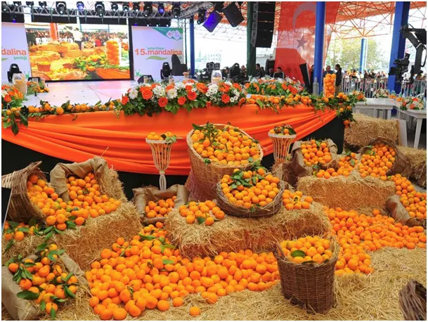
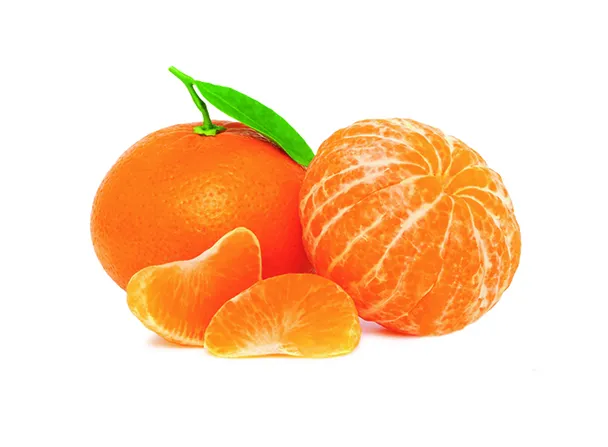
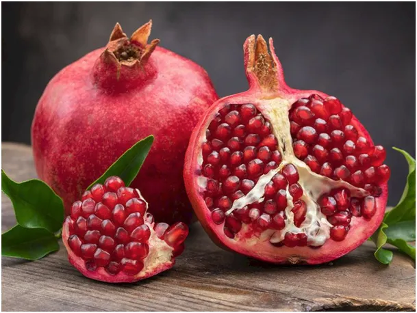
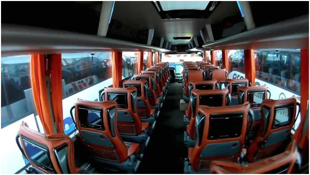
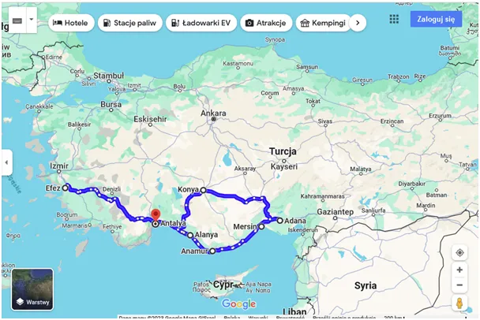

Owocowy zawrót głowy
Tekst nie jest sponsorowany, jest zapisem z podróży.

Natura obdarza ostrymi kolorami trujące rośliny. Owady i zwierzęta instynktownie omijają takie przekąski. Człowiek obdarzony rozumem, gdy się raz przekona że taki owoc jest smaczny i zdrowy bagatelizuje taki przekaz. Listopad to sezon na mandarynki i granaty. Czas bardzo taniej Turcji to już przeszłość, dziś za te owoce trzeba zapłacić odpowiednio 3 zł i 2 zł za kilogram. Czyli za 10 zł mamy od 5 do 3 kg owoców.


Przez ostatnie dwa tygodnie mnóstwo czasu spędziłem w podróży. Tureckie autobusy są bardzo tanie i wygodnie. Taki detal, że stewart przynosi walizkę z bagażnika i podaje napoje i przekąski, to już dodaje tylko podróży smaku. Fotele najwyższej klasy są zawsze skórzane i jest ich na długich trasach zawsze tylko 3 w rzędzie, ten pojedynczy przy oknie jest o 2 zł droższy.

Ale jeśli siedzicie na podwójnym, to każdy fotel ma swoje dwa osobne, szerokie podłokietniki. Co 2-3 h autobus staje na specjalnych "zajazdach", gdzie można zjeść i kupić wszystko. Każdy pasażer ma swój ekran z osobistą biblioteką filmów, gier i czego dusza zapragnie.
Sezonowe owoce to doskonały prowiant na drogę, z kilogramem mandarynek pokonywałem trasy nawet po 600 km. Do tego suszone na słońcu figi, mały czekoladowy baton i życie jest piękne, gdy za oknem mijamy potężne góry i kaniony. Gdy przystanek wypada na stacji benzynowej większość pasażerów wychodzi zapalić i aby rozprostować nogi z dymiącymi papierosami snuje się między dystrybutorami paliwa. Szybko się zorientowałem, że część podróżnych też ma świeże mandarynki, które są naturalnym, idealnym napojem i słodką przekąską, a skórka idealnie czyści i odświeża dłonie. Owoce mieli ze sobą ludzie ze wsi, często ubrani w charakterystyczny dla Turcji strój. Ludzie bardziej modernistyczni oraz cała młodzież miała kartonikowe słodkie "soczki", katastrofalne dla zdrowia z powodu cukru i konserwantów. Zdumiewające jest jak łatwo rezygnujemy z tego, co lepsze i tańsze na rzecz szkodliwej tandety, tylko dlatego, że jest ona reklamowana w TV.
Proste, dobre rozwiązania są tępione w zachodniej kulturze, bo są konkurencyjne dla oferty koncernów, które sprzedają nam słodzone złudzenia. Tylko od nas zależy, czy je kupimy, czy zamiast wrzucać do automatu z soczkami monety wrzucimy do plecaka kilka mandarynek.

Tylko dla orłów latających wysoko: mandarynek nie trzeba wyrzucać, jak butelkowanej wody przed wejściem na lotnisko.
Paweł Klimczewski